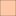

<!doctype html>
<html lang="en">
    <head>
        <meta charset="utf-8">
        <meta http-equiv="X-UA-Compatible" content="IE=edge">
        <meta name="viewport" content="initial-scale=1,user-scalable=no,maximum-scale=1,width=device-width">
        <meta name="mobile-web-app-capable" content="yes">
        <meta name="apple-mobile-web-app-capable" content="yes">
        <link rel="stylesheet" href="css/leaflet.css"><link rel="stylesheet" href="css/L.Control.Locate.min.css">
        <link rel="stylesheet" href="css/qgis2web.css"><link rel="stylesheet" href="css/fontawesome-all.min.css">
        <link rel="stylesheet" href="css/filter.css">
<link rel="stylesheet" href="css/nouislider.min.css">
        <link rel="stylesheet" href="css/leaflet-measure.css">
        <style>
        html, body, #map {
            width: 100%;
            height: 100%;
            padding: 0;
            margin: 0;
        }
        </style>
        <title></title>
    </head>
    <body>
        <div id="map">
        </div>
        <script src="js/qgis2web_expressions.js"></script>
        <script src="js/leaflet.js"></script><script src="js/L.Control.Locate.min.js"></script>
        <script src="js/leaflet.rotatedMarker.js"></script>
        <script src="js/leaflet.pattern.js"></script>
        <script src="js/leaflet-hash.js"></script>
        <script src="js/Autolinker.min.js"></script>
        <script src="js/rbush.min.js"></script>
        <script src="js/labelgun.min.js"></script>
        <script src="js/labels.js"></script>
        <script src="js/leaflet-measure.js"></script>
        <script src="js/tailDT.js"></script>
<script src="js/nouislider.min.js"></script>
<script src="js/wNumb.js"></script>
        <script src="data/Plotsoflandin1733_2.js"></script>
        <script src="data/Roads_3.js"></script>
        <script src="data/Water_4.js"></script>
        <script src="data/OldDykeca1288until1551_5.js"></script>
        <script src="data/NewDyke1551presentday_6.js"></script>
        <script src="data/Canals_7.js"></script>
        <script src="data/Buildingsin1733_8.js"></script>
        <script>
        var highlightLayer;
        function highlightFeature(e) {
            highlightLayer = e.target;

            if (e.target.feature.geometry.type === 'LineString') {
              highlightLayer.setStyle({
                color: '#ffff00',
              });
            } else {
              highlightLayer.setStyle({
                fillColor: '#ffff00',
                fillOpacity: 1
              });
            }
        }
        var map = L.map('map', {
            zoomControl:true, maxZoom:28, minZoom:1
        }).fitBounds([[51.58547790361326,4.453823297481339],[51.58923042576219,4.465887108449526]]);
        var hash = new L.Hash(map);
        map.attributionControl.setPrefix('<a href="https://github.com/tomchadwin/qgis2web" target="_blank">qgis2web</a> &middot; <a href="https://leafletjs.com" title="A JS library for interactive maps">Leaflet</a> &middot; <a href="https://qgis.org">QGIS</a>');
        var autolinker = new Autolinker({truncate: {length: 30, location: 'smart'}});
        L.control.locate({locateOptions: {maxZoom: 19}}).addTo(map);
        var measureControl = new L.Control.Measure({
            position: 'topleft',
            primaryLengthUnit: 'meters',
            secondaryLengthUnit: 'kilometers',
            primaryAreaUnit: 'sqmeters',
            secondaryAreaUnit: 'hectares'
        });
        measureControl.addTo(map);
        document.getElementsByClassName('leaflet-control-measure-toggle')[0]
        .innerHTML = '';
        document.getElementsByClassName('leaflet-control-measure-toggle')[0]
        .className += ' fas fa-ruler';
        var bounds_group = new L.featureGroup([]);
        function setBounds() {
        }
        map.createPane('pane_OpenStreetMap_0');
        map.getPane('pane_OpenStreetMap_0').style.zIndex = 400;
        var layer_OpenStreetMap_0 = L.tileLayer('https://tile.openstreetmap.org/{z}/{x}/{y}.png', {
            pane: 'pane_OpenStreetMap_0',
            opacity: 1.0,
            attribution: '',
            minZoom: 1,
            maxZoom: 28,
            minNativeZoom: 0,
            maxNativeZoom: 19
        });
        layer_OpenStreetMap_0;
        map.addLayer(layer_OpenStreetMap_0);
        map.createPane('pane_Googlesatellite_1');
        map.getPane('pane_Googlesatellite_1').style.zIndex = 401;
        var layer_Googlesatellite_1 = L.tileLayer('http://mt0.google.com/vt/lyrs=s&hl=en&x={x}&y={y}&z={z}', {
            pane: 'pane_Googlesatellite_1',
            opacity: 1.0,
            attribution: '',
            minZoom: 1,
            maxZoom: 28,
            minNativeZoom: 0,
            maxNativeZoom: 18
        });
        layer_Googlesatellite_1;
        map.addLayer(layer_Googlesatellite_1);
        function pop_Plotsoflandin1733_2(feature, layer) {
            layer.on({
                mouseout: function(e) {
                    for (i in e.target._eventParents) {
                        e.target._eventParents[i].resetStyle(e.target);
                    }
                },
                mouseover: highlightFeature,
            });
            var popupContent = '<table>\
                    <tr>\
                        <th scope="row">Perceelnr.</th>\
                        <td>' + (feature.properties['Perceelnr.'] !== null ? autolinker.link(feature.properties['Perceelnr.'].toLocaleString()) : '') + '</td>\
                    </tr>\
                    <tr>\
                        <th scope="row">Voornaam</th>\
                        <td>' + (feature.properties['Voornaam'] !== null ? autolinker.link(feature.properties['Voornaam'].toLocaleString()) : '') + '</td>\
                    </tr>\
                    <tr>\
                        <th scope="row">Achternaam</th>\
                        <td>' + (feature.properties['Achternaam'] !== null ? autolinker.link(feature.properties['Achternaam'].toLocaleString()) : '') + '</td>\
                    </tr>\
                    <tr>\
                        <th scope="row">Hoek</th>\
                        <td>' + (feature.properties['Hoek'] !== null ? autolinker.link(feature.properties['Hoek'].toLocaleString()) : '') + '</td>\
                    </tr>\
                    <tr>\
                        <td colspan="2">' + (feature.properties['Kleur'] !== null ? autolinker.link(feature.properties['Kleur'].toLocaleString()) : '') + '</td>\
                    </tr>\
                    <tr>\
                        <th scope="row">Landmeter</th>\
                        <td>' + (feature.properties['Landmeter'] !== null ? autolinker.link(feature.properties['Landmeter'].toLocaleString()) : '') + '</td>\
                    </tr>\
                    <tr>\
                        <th scope="row">Jaar</th>\
                        <td>' + (feature.properties['Jaar'] !== null ? autolinker.link(feature.properties['Jaar'].toLocaleString()) : '') + '</td>\
                    </tr>\
                    <tr>\
                        <th scope="row">Gemeten</th>\
                        <td>' + (feature.properties['Gemeten'] !== null ? autolinker.link(feature.properties['Gemeten'].toLocaleString()) : '') + '</td>\
                    </tr>\
                    <tr>\
                        <th scope="row">Belasting</th>\
                        <td>' + (feature.properties['Belasting'] !== null ? autolinker.link(feature.properties['Belasting'].toLocaleString()) : '') + '</td>\
                    </tr>\
                    <tr>\
                        <th scope="row">Belasting2</th>\
                        <td>' + (feature.properties['Belasting2'] !== null ? autolinker.link(feature.properties['Belasting2'].toLocaleString()) : '') + '</td>\
                    </tr>\
                    <tr>\
                        <th scope="row">Toponiem</th>\
                        <td>' + (feature.properties['Toponiem'] !== null ? autolinker.link(feature.properties['Toponiem'].toLocaleString()) : '') + '</td>\
                    </tr>\
                    <tr>\
                        <th scope="row">Stuyvers</th>\
                        <td>' + (feature.properties['Stuyvers'] !== null ? autolinker.link(feature.properties['Stuyvers'].toLocaleString()) : '') + '</td>\
                    </tr>\
                    <tr>\
                        <td colspan="2">' + (feature.properties['Geloof'] !== null ? autolinker.link(feature.properties['Geloof'].toLocaleString()) : '') + '</td>\
                    </tr>\
                    <tr>\
                        <td colspan="2">' + (feature.properties['Van Steen?'] !== null ? autolinker.link(feature.properties['Van Steen?'].toLocaleString()) : '') + '</td>\
                    </tr>\
                    <tr>\
                        <td colspan="2">' + (feature.properties['Wie'] !== null ? autolinker.link(feature.properties['Wie'].toLocaleString()) : '') + '</td>\
                    </tr>\
                    <tr>\
                        <td colspan="2">' + (feature.properties['Cijns St.C'] !== null ? autolinker.link(feature.properties['Cijns St.C'].toLocaleString()) : '') + '</td>\
                    </tr>\
                </table>';
            layer.bindPopup(popupContent, {maxHeight: 400});
        }

        function style_Plotsoflandin1733_2_0() {
            return {
                pane: 'pane_Plotsoflandin1733_2',
                opacity: 1,
                color: 'rgba(35,35,35,1.0)',
                dashArray: '',
                lineCap: 'butt',
                lineJoin: 'miter',
                weight: 1.0, 
                fill: true,
                fillOpacity: 0.5,
                fillColor: 'rgba(255,254,233,1.0)',
                interactive: true,
            }
        }
        map.createPane('pane_Plotsoflandin1733_2');
        map.getPane('pane_Plotsoflandin1733_2').style.zIndex = 402;
        map.getPane('pane_Plotsoflandin1733_2').style['mix-blend-mode'] = 'normal';
        var layer_Plotsoflandin1733_2 = new L.geoJson(json_Plotsoflandin1733_2, {
            attribution: '',
            interactive: true,
            dataVar: 'json_Plotsoflandin1733_2',
            layerName: 'layer_Plotsoflandin1733_2',
            pane: 'pane_Plotsoflandin1733_2',
            onEachFeature: pop_Plotsoflandin1733_2,
            style: style_Plotsoflandin1733_2_0,
        });
        bounds_group.addLayer(layer_Plotsoflandin1733_2);
        map.addLayer(layer_Plotsoflandin1733_2);
        function pop_Roads_3(feature, layer) {
            layer.on({
                mouseout: function(e) {
                    for (i in e.target._eventParents) {
                        e.target._eventParents[i].resetStyle(e.target);
                    }
                },
                mouseover: highlightFeature,
            });
            var popupContent = '<table>\
                    <tr>\
                        <th scope="row">straatnaam</th>\
                        <td>' + (feature.properties['straatnaam'] !== null ? autolinker.link(feature.properties['straatnaam'].toLocaleString()) : '') + '</td>\
                    </tr>\
                </table>';
            layer.bindPopup(popupContent, {maxHeight: 400});
        }

        function style_Roads_3_0() {
            return {
                pane: 'pane_Roads_3',
                stroke: false, 
                fill: true,
                fillOpacity: 1,
                fillColor: 'rgba(205,201,154,1.0)',
                interactive: true,
            }
        }
        map.createPane('pane_Roads_3');
        map.getPane('pane_Roads_3').style.zIndex = 403;
        map.getPane('pane_Roads_3').style['mix-blend-mode'] = 'normal';
        var layer_Roads_3 = new L.geoJson(json_Roads_3, {
            attribution: '',
            interactive: true,
            dataVar: 'json_Roads_3',
            layerName: 'layer_Roads_3',
            pane: 'pane_Roads_3',
            onEachFeature: pop_Roads_3,
            style: style_Roads_3_0,
        });
        bounds_group.addLayer(layer_Roads_3);
        map.addLayer(layer_Roads_3);
        function pop_Water_4(feature, layer) {
            layer.on({
                mouseout: function(e) {
                    for (i in e.target._eventParents) {
                        e.target._eventParents[i].resetStyle(e.target);
                    }
                },
                mouseover: highlightFeature,
            });
            var popupContent = '<table>\
                    <tr>\
                        <td colspan="2">' + (feature.properties['id'] !== null ? autolinker.link(feature.properties['id'].toLocaleString()) : '') + '</td>\
                    </tr>\
                </table>';
            layer.bindPopup(popupContent, {maxHeight: 400});
        }

        function style_Water_4_0() {
            return {
                pane: 'pane_Water_4',
                stroke: false, 
                fill: true,
                fillOpacity: 1,
                fillColor: 'rgba(192,210,231,1.0)',
                interactive: true,
            }
        }
        map.createPane('pane_Water_4');
        map.getPane('pane_Water_4').style.zIndex = 404;
        map.getPane('pane_Water_4').style['mix-blend-mode'] = 'normal';
        var layer_Water_4 = new L.geoJson(json_Water_4, {
            attribution: '',
            interactive: true,
            dataVar: 'json_Water_4',
            layerName: 'layer_Water_4',
            pane: 'pane_Water_4',
            onEachFeature: pop_Water_4,
            style: style_Water_4_0,
        });
        bounds_group.addLayer(layer_Water_4);
        map.addLayer(layer_Water_4);
        function pop_OldDykeca1288until1551_5(feature, layer) {
            layer.on({
                mouseout: function(e) {
                    for (i in e.target._eventParents) {
                        e.target._eventParents[i].resetStyle(e.target);
                    }
                },
                mouseover: highlightFeature,
            });
            var popupContent = '<table>\
                    <tr>\
                        <td colspan="2">' + (feature.properties['id'] !== null ? autolinker.link(feature.properties['id'].toLocaleString()) : '') + '</td>\
                    </tr>\
                    <tr>\
                        <td colspan="2">' + (feature.properties['Naam'] !== null ? autolinker.link(feature.properties['Naam'].toLocaleString()) : '') + '</td>\
                    </tr>\
                </table>';
            layer.bindPopup(popupContent, {maxHeight: 400});
        }

        function style_OldDykeca1288until1551_5_0() {
            return {
                pane: 'pane_OldDykeca1288until1551_5',
                opacity: 1,
                color: 'rgba(61,171,126,1.0)',
                dashArray: '10,5',
                lineCap: 'square',
                lineJoin: 'bevel',
                weight: 3.0,
                fillOpacity: 0,
                interactive: true,
            }
        }
        map.createPane('pane_OldDykeca1288until1551_5');
        map.getPane('pane_OldDykeca1288until1551_5').style.zIndex = 405;
        map.getPane('pane_OldDykeca1288until1551_5').style['mix-blend-mode'] = 'normal';
        var layer_OldDykeca1288until1551_5 = new L.geoJson(json_OldDykeca1288until1551_5, {
            attribution: '',
            interactive: true,
            dataVar: 'json_OldDykeca1288until1551_5',
            layerName: 'layer_OldDykeca1288until1551_5',
            pane: 'pane_OldDykeca1288until1551_5',
            onEachFeature: pop_OldDykeca1288until1551_5,
            style: style_OldDykeca1288until1551_5_0,
        });
        bounds_group.addLayer(layer_OldDykeca1288until1551_5);
        map.addLayer(layer_OldDykeca1288until1551_5);
        function pop_NewDyke1551presentday_6(feature, layer) {
            layer.on({
                mouseout: function(e) {
                    for (i in e.target._eventParents) {
                        e.target._eventParents[i].resetStyle(e.target);
                    }
                },
                mouseover: highlightFeature,
            });
            var popupContent = '<table>\
                    <tr>\
                        <td colspan="2">' + (feature.properties['id'] !== null ? autolinker.link(feature.properties['id'].toLocaleString()) : '') + '</td>\
                    </tr>\
                </table>';
            layer.bindPopup(popupContent, {maxHeight: 400});
        }

        function style_NewDyke1551presentday_6_0() {
            return {
                pane: 'pane_NewDyke1551presentday_6',
                stroke: false, 
                fill: true,
                fillOpacity: 1,
                fillColor: 'rgba(164,113,88,1.0)',
                interactive: true,
            }
        }
        map.createPane('pane_NewDyke1551presentday_6');
        map.getPane('pane_NewDyke1551presentday_6').style.zIndex = 406;
        map.getPane('pane_NewDyke1551presentday_6').style['mix-blend-mode'] = 'normal';
        var layer_NewDyke1551presentday_6 = new L.geoJson(json_NewDyke1551presentday_6, {
            attribution: '',
            interactive: true,
            dataVar: 'json_NewDyke1551presentday_6',
            layerName: 'layer_NewDyke1551presentday_6',
            pane: 'pane_NewDyke1551presentday_6',
            onEachFeature: pop_NewDyke1551presentday_6,
            style: style_NewDyke1551presentday_6_0,
        });
        bounds_group.addLayer(layer_NewDyke1551presentday_6);
        map.addLayer(layer_NewDyke1551presentday_6);
        function pop_Canals_7(feature, layer) {
            layer.on({
                mouseout: function(e) {
                    for (i in e.target._eventParents) {
                        e.target._eventParents[i].resetStyle(e.target);
                    }
                },
                mouseover: highlightFeature,
            });
            var popupContent = '<table>\
                    <tr>\
                        <td colspan="2">' + (feature.properties['id'] !== null ? autolinker.link(feature.properties['id'].toLocaleString()) : '') + '</td>\
                    </tr>\
                </table>';
            layer.bindPopup(popupContent, {maxHeight: 400});
        }

        function style_Canals_7_0() {
            return {
                pane: 'pane_Canals_7',
                stroke: false, 
                fill: true,
                fillOpacity: 1,
                fillColor: 'rgba(165,191,221,1.0)',
                interactive: true,
            }
        }
        map.createPane('pane_Canals_7');
        map.getPane('pane_Canals_7').style.zIndex = 407;
        map.getPane('pane_Canals_7').style['mix-blend-mode'] = 'normal';
        var layer_Canals_7 = new L.geoJson(json_Canals_7, {
            attribution: '',
            interactive: true,
            dataVar: 'json_Canals_7',
            layerName: 'layer_Canals_7',
            pane: 'pane_Canals_7',
            onEachFeature: pop_Canals_7,
            style: style_Canals_7_0,
        });
        bounds_group.addLayer(layer_Canals_7);
        map.addLayer(layer_Canals_7);
        function pop_Buildingsin1733_8(feature, layer) {
            layer.on({
                mouseout: function(e) {
                    for (i in e.target._eventParents) {
                        e.target._eventParents[i].resetStyle(e.target);
                    }
                },
                mouseover: highlightFeature,
            });
            var popupContent = '<table>\
                    <tr>\
                        <td colspan="2">' + (feature.properties['id'] !== null ? autolinker.link(feature.properties['id'].toLocaleString()) : '') + '</td>\
                    </tr>\
                </table>';
            layer.bindPopup(popupContent, {maxHeight: 400});
        }

        function style_Buildingsin1733_8_0() {
            return {
                pane: 'pane_Buildingsin1733_8',
                opacity: 1,
                color: 'rgba(0,0,0,1.0)',
                dashArray: '',
                lineCap: 'butt',
                lineJoin: 'miter',
                weight: 1, 
                fill: true,
                fillOpacity: 1,
                fillColor: 'rgba(227,153,142,1.0)',
                interactive: true,
            }
        }
        map.createPane('pane_Buildingsin1733_8');
        map.getPane('pane_Buildingsin1733_8').style.zIndex = 408;
        map.getPane('pane_Buildingsin1733_8').style['mix-blend-mode'] = 'normal';
        var layer_Buildingsin1733_8 = new L.geoJson(json_Buildingsin1733_8, {
            attribution: '',
            interactive: true,
            dataVar: 'json_Buildingsin1733_8',
            layerName: 'layer_Buildingsin1733_8',
            pane: 'pane_Buildingsin1733_8',
            onEachFeature: pop_Buildingsin1733_8,
            style: style_Buildingsin1733_8_0,
        });
        bounds_group.addLayer(layer_Buildingsin1733_8);
        map.addLayer(layer_Buildingsin1733_8);
        var baseMaps = {};
        L.control.layers(baseMaps,{' Buildings in 1733': layer_Buildingsin1733_8,' Canals': layer_Canals_7,' New Dyke (1551-present day)': layer_NewDyke1551presentday_6,' Old Dyke (ca. 1288 until 1551)': layer_OldDykeca1288until1551_5,' Water': layer_Water_4,' Roads': layer_Roads_3,' Plots of land in 1733': layer_Plotsoflandin1733_2,"Google satellite": layer_Googlesatellite_1,"OpenStreetMap": layer_OpenStreetMap_0,}).addTo(map);
        map.on("zoomend", function(){

                if (map.hasLayer(layer_Roads_3)) {
                    if (map.getZoom() <= 14 && map.getZoom() >= 19) {
                        layer_Roads_3.eachLayer(function (layer) {
                            layer.openTooltip();
                        });
                    } else {
                        layer_Roads_3.eachLayer(function (layer) {
                            layer.closeTooltip();
                        });
                    }
                }
        });
        setBounds();
                if (map.hasLayer(layer_Roads_3)) {
                    if (map.getZoom() <= 14 && map.getZoom() >= 19) {
                        layer_Roads_3.eachLayer(function (layer) {
                            layer.openTooltip();
                        });
                    } else {
                        layer_Roads_3.eachLayer(function (layer) {
                            layer.closeTooltip();
                        });
                    }
                }
        var mapDiv = document.getElementById('map');
        var row = document.createElement('div');
        row.className="row";
        row.id="all";
        row.style.height = "100%";
        var col1 = document.createElement('div');
        col1.className="col9";
        col1.id = "mapWindow";
        col1.style.height = "99%";
        col1.style.width = "80%";
        col1.style.display = "inline-block";
        var col2 = document.createElement('div');
        col2.className="col3";
        col2.id = "menu";
        col2.style.display = "inline-block";
        mapDiv.parentNode.insertBefore(row, mapDiv);
        document.getElementById("all").appendChild(col1);
        document.getElementById("all").appendChild(col2);
        col1.appendChild(mapDiv)
        var Filters = {"Wie": "str"};
        function filterFunc() {
          map.eachLayer(function(lyr){
          if ("options" in lyr && "dataVar" in lyr["options"]){
            features = this[lyr["options"]["dataVar"]].features.slice(0);
            try{
              for (key in Filters){
                keyS = key.replace(/[^a-zA-Z0-9_]/g, "")
                if (Filters[key] == "str" || Filters[key] == "bool"){
                  var selection = [];
                  var options = document.getElementById("sel_" + keyS).options
                  for (var i=0; i < options.length; i++) {
                    if (options[i].selected) selection.push(options[i].value);
                  }
                    try{
                      if (key in features[0].properties){
                        for (i = features.length - 1;
                          i >= 0; --i){
                          if (selection.indexOf(
                          features[i].properties[key])<0
                          && selection.length>0) {
                          features.splice(i,1);
                          }
                        }
                      }
                    } catch(err){
                  }
                }
                if (Filters[key] == "int"){
                  sliderVals =  document.getElementById(
                    "div_" + keyS).noUiSlider.get();
                  try{
                    if (key in features[0].properties){
                    for (i = features.length - 1; i >= 0; --i){
                      if (parseInt(features[i].properties[key])
                          < sliderVals[0]
                          || parseInt(features[i].properties[key])
                          > sliderVals[1]){
                            features.splice(i,1);
                          }
                        }
                      }
                    } catch(err){
                    }
                  }
                if (Filters[key] == "real"){
                  sliderVals =  document.getElementById(
                    "div_" + keyS).noUiSlider.get();
                  try{
                    if (key in features[0].properties){
                    for (i = features.length - 1; i >= 0; --i){
                      if (features[i].properties[key]
                          < sliderVals[0]
                          || features[i].properties[key]
                          > sliderVals[1]){
                            features.splice(i,1);
                          }
                        }
                      }
                    } catch(err){
                    }
                  }
                if (Filters[key] == "date"
                  || Filters[key] == "datetime"
                  || Filters[key] == "time"){
                  try{
                    if (key in features[0].properties){
                      HTMLkey = key.replace(/[&\/\\#,+()$~%.'":*?<>{} ]/g, '');
                      startdate = document.getElementById("dat_" +
                        HTMLkey + "_date1").value.replace(" ", "T");
                      enddate = document.getElementById("dat_" +
                        HTMLkey + "_date2").value.replace(" ", "T");
                      for (i = features.length - 1; i >= 0; --i){
                        if (features[i].properties[key] < startdate
                          || features[i].properties[key] > enddate){
                          features.splice(i,1);
                        }
                      }
                    }
                  } catch(err){
                  }
                }
              }
            } catch(err){
            }
          this[lyr["options"]["layerName"]].clearLayers();
          this[lyr["options"]["layerName"]].addData(features);
          }
          })
        }
            document.getElementById("menu").appendChild(
                document.createElement("div"));
            var div_Wie = document.createElement('div');
            div_Wie.id = "div_Wie";
            div_Wie.className= "filterselect";
            document.getElementById("menu").appendChild(div_Wie);
            sel_Wie = document.createElement('select');
            sel_Wie.multiple = true;
            sel_Wie.size = 4;
            sel_Wie.id = "sel_Wie";
            var Wie_options_str = "<option value='' unselected></option>";
            sel_Wie.onchange = function(){filterFunc()};
            Wie_options_str  += '<option value="Local Landowners">Local Landowners</option>';
            Wie_options_str  += '<option value="Nobility">Nobility</option>';
            Wie_options_str  += '<option value="The Church">The Church</option>';
            Wie_options_str  += '<option value="The Marquisate (local lord; local government)">The Marquisate (local lord; local government)</option>';
            sel_Wie.innerHTML = Wie_options_str;
            div_Wie.appendChild(sel_Wie);
            var lab_Wie = document.createElement('div');
            lab_Wie.innerHTML = 'Wie';
            lab_Wie.className = 'filterlabel';
            div_Wie.appendChild(lab_Wie);
            var reset_Wie = document.createElement('div');
            reset_Wie.innerHTML = 'clear filter';
            reset_Wie.className = 'filterlabel';
            reset_Wie.onclick = function() {
                var options = document.getElementById("sel_Wie").options;
                for (var i=0; i < options.length; i++) {
                    options[i].selected = false;
                }
                filterFunc();
            };
            div_Wie.appendChild(reset_Wie);
        resetLabels([layer_Roads_3,layer_OldDykeca1288until1551_5]);
        map.on("zoomend", function(){
            resetLabels([layer_Roads_3,layer_OldDykeca1288until1551_5]);
        });
        map.on("layeradd", function(){
            resetLabels([layer_Roads_3,layer_OldDykeca1288until1551_5]);
        });
        map.on("layerremove", function(){
            resetLabels([layer_Roads_3,layer_OldDykeca1288until1551_5]);
        });
        </script>
    </body>
</html>
